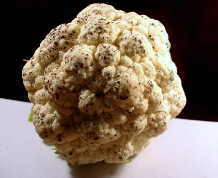

Pseudomonas Syringae
Did you know that...
Pseudomonas syringae is a rod shaped Gram-negative bacteria, with an aerobic metabolism, and polar flagella. It is a plant pathogen that can be characterized by its inability to properly utilize arginine, because it lacks the assistance of the arginine dihydrolase system. This species of bacteria is actually represented by over 50 different pathovar strains, which is a set of bacterial strains with similar characteristics differentiated by their distinctive pathogenicity toward one or more plant hosts. Each strain of Pseudomonas syringae is specific for a particular plant. All Pseudomonas syringae strains lack a specific cytochrome C oxidase in their respiratory electron transport chain, which causes a negative oxidase reaction to result. It is a nutritionally versatile organism that thrives on damaged plant tissues, and most notably, colonizes the surface of plant leaves. Each strain is specific to a particular species of plant for which it infects. However, it should be noted that not all strains of Pseudomonas syringae are necessarily pathogenic and can develop in non-host plants as well. Non-pathogenic strains have been researched as potential sources of inoculations for plants, serving as a form of antifungal treatment. This in turn generated great interest in sequencing the various genomes of the different strains of P. syringae, in order to better understand the potential utilization of these plant pathogens in agriculture, the identification of genes that are specifically expressed in plants, and enhance the capability of utilizing the ice nucleation properties found within this bacterial species. Besides the use of this bacterium as an antifungal agent against post-harvest rots, it has been found that it has the capability to prevent/ reduce the effects of frost damage on cash crops such as those of the citrus industry. Genomic sequences led to the discovery on a genomic island that produces the nucleation protein necessary for the formation of ice within P. syringae. This discovery has led to the capability of producing artificial snow, a necessity for some ski resorts.

Additional Information
Infected Cauliflower
Disease in Cauliflower
Pseudomonas syringae is responsible for a number of economically important diseases in the Pacific Northwest. This bacterium can infect a wide variety of fruits, vegetables, and ornamental plants. Several important factors about these diseases must be considered before control measures can be implemented. This article will focus on symptoms, plant susceptibility, sources, and spread of the bacterium. Once these are known, cultural, biological, and chemical control methods can be effective.
Back